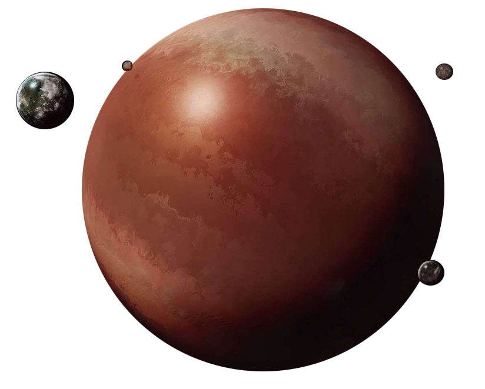

Yavin 4
yavin four
Population: No Permanent Population
Terrain:
Orbital Metrics: 4,818 days per year / 24 hours per day
Languages: None
Major Cities: None
Areas of Interest: Great Massassi Temple (abandoned Rebel base), Temple of Exar Kun, Temple of the Blueleaf Cluster, Palace of the Woolamander
Major Exports: None
Major Imports: None
Astronavigation Data
Trade Routes:
An insignificant moon in a seemingly insignificant system, Yavin 4 has been the site of several important events throughout history. In the distant past, Yavin 4 was home to a civilization called the Massassi, which worshiped Dark Lords of the Sith. Recently, Yavin 4 was the site of the unlikely battle in which a small Rebel force destroyed the Death Star, the most powerful superweapon in the galaxy.
The Yavin system is far from any major trade route in an out-of-the-way sector called the Gordian Reach, within the Trans-Hydian Borderlands of the Outer Rim. Yavin 4 is covered in lush jungles and sprawling rainforests, separated by modest oceans. Its dense ecology thrives due to numerous active volcanoes scattered about the moon’s surface. Yavin 4 is one of twenty-six moons orbiting the red gas giant Yavin Prime.
After the Alliance destroyed the Death Star and evacuated Yavin 4, the Empire blockaded the system. It scoured the wreckage of the battle station to prevent any remaining technology from falling into the wrong hands. After a six-month cordon, the Empire finally loosened restrictions and allowed traffic back into the system. Miners and prospectors flocked to Yavin Prime, harvesting valuable Corusca gems from the gas giant’s atmosphere. Explorers and academics have followed, hoping to unlock the mysteries of the ancient ruins that dot the moon’s surface. Predictably, crime syndicates have been infiltrating Yavin 4’s infrastructure to poach exotic animals, traffic spice, and pilfer priceless gems. Even Alliance smugglers are sneaking back onto Yavin 4, hoping to retrieve Alliance equipment from hidden stores.
The Alliance victory at Yavin sent shockwaves throughout the galaxy and distinguished the Rebels as the single greatest threat to the Emperor’s reign. Alliance High Command knew retaliation would be swift and terrible. The Empire seeks to punish the Rebels for their victory as well as to investigate the system for any remnants of the battlestation.